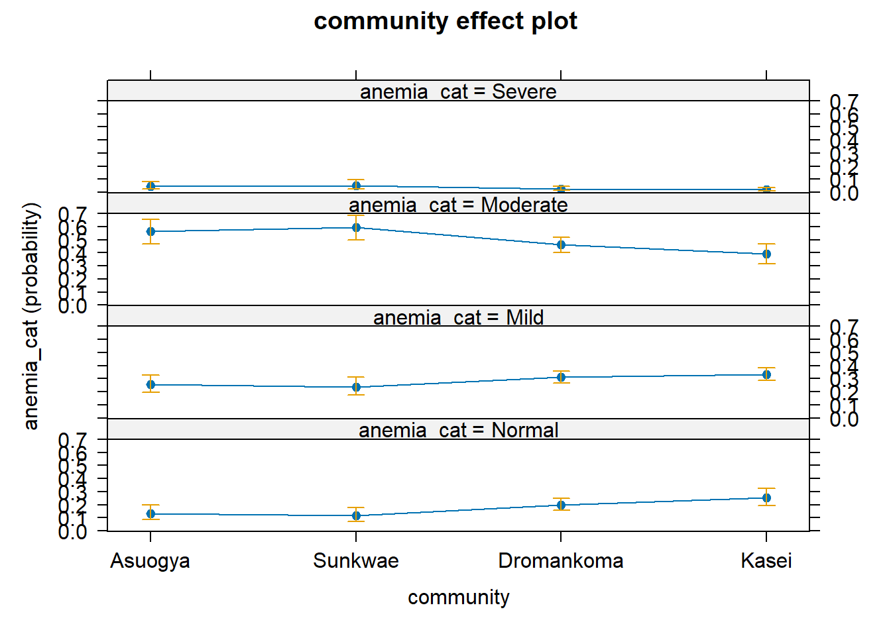
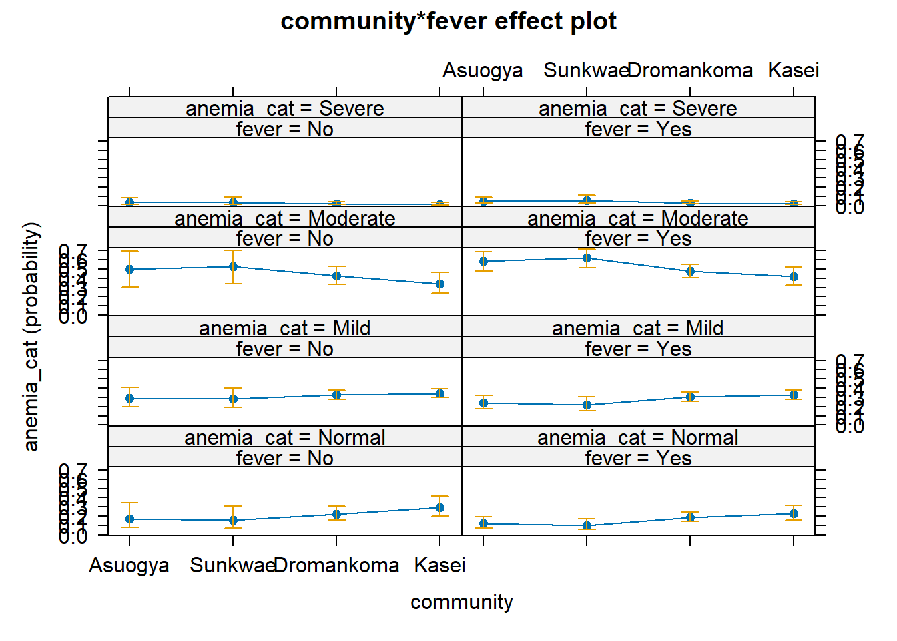

Code
dataF <-
dget("C:/Dataset/anemia_data") %>%
select(sid, anemia_cat, community, fever, sex,
famsize, moccup2, foccup2, hosp_visit)In this presentation, we analyse a dataset using ordinal logistic regression. We begin by reading the data and selecting our desired subset.
dataF <-
dget("C:/Dataset/anemia_data") %>%
select(sid, anemia_cat, community, fever, sex,
famsize, moccup2, foccup2, hosp_visit)We then view a summary of the data
dataF %>% glimpse()Rows: 476
Columns: 9
$ sid <dbl> 1, 2, 3, 4, 5, 6, 7, 8, 9, 10, 11, 12, 13, 14, 15, 16, 17, …
$ anemia_cat <fct> Mild, Moderate, Normal, Severe, Mild, Moderate, Mild, Mild,…
$ community <fct> Kasei, Kasei, Kasei, Kasei, Kasei, Kasei, Kasei, Kasei, Kas…
$ fever <fct> Yes, Yes, Yes, Yes, Yes, No, No, Yes, Yes, Yes, Yes, Yes, Y…
$ sex <fct> Female, Female, Female, Male, Male, Female, Female, Male, F…
$ famsize <dbl> 4, 4, 2, 3, 5, 4, 9, 4, 4, 10, 3, 4, 3, 4, 5, 5, 6, 4, 4, 2…
$ moccup2 <fct> Farmer, Farmer, Other, Other, Farmer, Farmer, Farmer, Other…
$ foccup2 <fct> Farmer, Farmer, Other, Farmer, Farmer, Farmer, Farmer, Othe…
$ hosp_visit <fct> No, No, No, Yes, Yes, No, No, No, No, Yes, Yes, No, Yes, Ye…Note that the anemia_cat variable is an ordered factor variable. For completeness the single missing observation for the variable hosp_adm will be recoded to No.
dataF <- dataF %>%
mutate(hosp_visit = forcats::fct_explicit_na(hosp_visit, na_level = "No"))Warning: There was 1 warning in `mutate()`.
ℹ In argument: `hosp_visit = forcats::fct_explicit_na(hosp_visit, na_level =
"No")`.
Caused by warning:
! `fct_explicit_na()` was deprecated in forcats 1.0.0.
ℹ Please use `fct_na_value_to_level()` instead.summary(dataF) sid anemia_cat community fever sex
Min. : 1.0 Normal : 92 Asuogya : 61 No :160 Male :252
1st Qu.:119.8 Mild :143 Sunkwae : 62 Yes:316 Female:224
Median :240.5 Moderate:226 Dromankoma:229
Mean :240.2 Severe : 15 Kasei :124
3rd Qu.:360.2
Max. :501.0
famsize moccup2 foccup2 hosp_visit
Min. : 0.000 Farmer:314 Farmer:355 No :320
1st Qu.: 4.000 Other :162 Other :121 Yes:156
Median : 5.000
Mean : 5.151
3rd Qu.: 6.000
Max. :11.000 Now we begin the ordinal regression by fixing the first model, the Null model.
Model_0 <- ordinal::clm(anemia_cat ~ 1, data = dataF, link = "logit")
summary(Model_0)formula: anemia_cat ~ 1
data: dataF
link threshold nobs logLik AIC niter max.grad cond.H
logit flexible 476 -543.39 1092.77 7(0) 2.15e-13 1.4e+01
Threshold coefficients:
Estimate Std. Error z value
Normal|Mild -1.42885 0.11608 -12.310
Mild|Moderate -0.02521 0.09168 -0.275
Moderate|Severe 3.42535 0.26237 13.056Subsequently, we introduce the fever variable as independent and express the results as OR with 95%CI
Model_1 <- ordinal::clm(anemia_cat ~ fever, data = dataF, link = "logit")
broom::tidy(Model_1, conf.int = TRUE, exponentiate = TRUE)%>%
flextable::as_flextable() %>%
flextable::colformat_double(
j = c("estimate", "std.error", "statistic", "p.value",
"conf.low", "conf.high"),
digits = 3)term | estimate | std.error | statistic | p.value | conf.low | conf.high | coef.type |
|---|---|---|---|---|---|---|---|
character | numeric | numeric | numeric | numeric | numeric | numeric | character |
Normal|Mild | 0.306 | 0.163 | -7.268 | 0.000 | intercept | ||
Mild|Moderate | 1.257 | 0.152 | 1.505 | 0.132 | intercept | ||
Moderate|Severe | 40.111 | 0.293 | 12.601 | 0.000 | intercept | ||
feverYes | 1.461 | 0.181 | 2.090 | 0.037 | 1.024 | 2.086 | location |
n: 4 | |||||||
Results indicate a significant association between fever and the degree of anaemia (OR=1.46, 95%CI: 1.02 to 2.09). Performing an ANOVA test to see if there exists a difference between the 2 models.
anova(Model_0, Model_1)| no.par | AIC | logLik | LR.stat | df | Pr(>Chisq) |
|---|---|---|---|---|---|
| 3 | 1.09e+03 | -543 | |||
| 4 | 1.09e+03 | -541 | 4.37 | 1 | 0.0367 |
The results indicate adding fever to the Null model significantly improves the null model.
Next, we add the community variable
Model_2 <-
ordinal::clm(anemia_cat ~ fever + community, data = dataF, link = "logit")
broom::tidy(Model_2, conf.int = TRUE, exponentiate = TRUE)%>%
flextable::as_flextable() %>%
flextable::colformat_double(
j = c("estimate", "std.error", "statistic", "p.value",
"conf.low", "conf.high"),
digits = 3)term | estimate | std.error | statistic | p.value | conf.low | conf.high | coef.type |
|---|---|---|---|---|---|---|---|
character | numeric | numeric | numeric | numeric | numeric | numeric | character |
Normal|Mild | 0.191 | 0.286 | -5.789 | 0.000 | intercept | ||
Mild|Moderate | 0.808 | 0.274 | -0.775 | 0.438 | intercept | ||
Moderate|Severe | 27.058 | 0.367 | 8.985 | 0.000 | intercept | ||
feverYes | 1.373 | 0.183 | 1.728 | 0.084 | 0.958 | 1.966 | location |
communitySunkwae | 1.179 | 0.343 | 0.479 | 0.632 | 0.602 | 2.314 | location |
communityDromankoma | 0.626 | 0.268 | -1.747 | 0.081 | 0.368 | 1.054 | location |
communityKasei | 0.463 | 0.289 | -2.659 | 0.008 | 0.261 | 0.813 | location |
n: 7 | |||||||
Here we check the proportional odd assumption for our second model
ordinal::nominal_test(Model_2)| Df | logLik | AIC | LRT | Pr(>Chi) |
|---|---|---|---|---|
| -535 | 1.08e+03 | |||
| 2 | -534 | 1.09e+03 | 0.379 | 0.827 |
| 6 | -525 | 1.08e+03 | 18.7 | 0.00468 |
The significant p-value for the community variable indicates a breach of the proportional odd assumption
In this section, we will use the model created above to predict an observation in a specific anaemia severity group. First, we begin by forming the prediction data we call newData.
NewData <- expand.grid(community = levels(dataF$community),
fever = levels(dataF$fever))
NewData| community | fever |
|---|---|
| Asuogya | No |
| Sunkwae | No |
| Dromankoma | No |
| Kasei | No |
| Asuogya | Yes |
| Sunkwae | Yes |
| Dromankoma | Yes |
| Kasei | Yes |
We now predict the probability that the specific predictor combination falls within the specific outcome category (anaemia category)
(preds <- predict(Model_2, newdata = NewData, type = "prob"))$fit
Normal Mild Moderate Severe
1 0.1601782 0.2868320 0.5173493 0.03564053
2 0.1392894 0.2675468 0.5514246 0.04173921
3 0.2335081 0.3300308 0.4138463 0.02261481
4 0.2915487 0.3440404 0.3475709 0.01684010
5 0.1220012 0.2486393 0.5810802 0.04827929
6 0.1054658 0.2277287 0.6103913 0.05641416
7 0.1816335 0.3030775 0.4845071 0.03078186
8 0.2306604 0.3289444 0.4174245 0.02297070For better visualisation, we bind the original data with the predictions
bind_cols(NewData, preds$fit) %>%
kableExtra::kbl(caption = "Probabilities", booktabs = T, digits = 3) %>%
kableExtra::kable_classic(full_width = F, html_font = "Cambria") %>%
kableExtra::kable_styling(bootstrap_options = c("striped", "hover"))| community | fever | Normal | Mild | Moderate | Severe |
|---|---|---|---|---|---|
| Asuogya | No | 0.160 | 0.287 | 0.517 | 0.036 |
| Sunkwae | No | 0.139 | 0.268 | 0.551 | 0.042 |
| Dromankoma | No | 0.234 | 0.330 | 0.414 | 0.023 |
| Kasei | No | 0.292 | 0.344 | 0.348 | 0.017 |
| Asuogya | Yes | 0.122 | 0.249 | 0.581 | 0.048 |
| Sunkwae | Yes | 0.105 | 0.228 | 0.610 | 0.056 |
| Dromankoma | Yes | 0.182 | 0.303 | 0.485 | 0.031 |
| Kasei | Yes | 0.231 | 0.329 | 0.417 | 0.023 |
Below we visualize the model by using the MASS and effects packages. We begin by fitting the model again with polr function.
pol_model.1 <- MASS::polr(anemia_cat ~ community, data = dataF)
pol_model.2 <- MASS::polr(anemia_cat ~ fever*community, data = dataF)And then we visualise the probability of having various forms of anaemia giving one belonging to the various groups.
M1 <- effects::Effect(focal.predictors = "community", mod=pol_model.1)
Re-fitting to get HessianM2 <- effects::Effect(focal.predictors = c("community", "fever"), mod=pol_model.2)
Re-fitting to get Hessianplot(M1)
plot(M2)